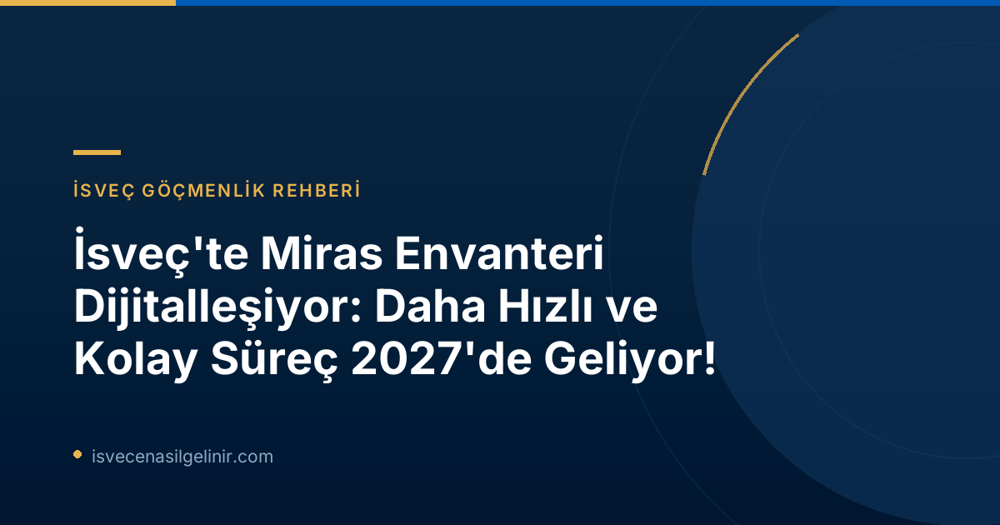

İsveç'te Miras Envanteri Süreci Neden Dijitalleşiyor? Mevcut Durum ve İhtiyaç
Her yıl yaklaşık 90.000 miras envanteri işlemi gerçekleştirilen İsveç'te, bu süreçler bugüne kadar tamamen kağıt üzerinde yürütülüyordu. Bu geleneksel yöntem, özellikle vefat sonrası yas süreciyle birleştiğinde, mirasçılar ve ilgili taraflar için önemli bir zorluk teşkil ediyordu. Skatteverket Birim Müdürü Anders Koskinen'in de belirttiği gibi: "Miras envanteri, hayatınızda belki de sadece bir kez ve sıklıkla yas tuttuğunuz bir dönemde yaptığınız bir şeydir. Bu süreçte her şeyin olabildiğince kolay olmasını isteriz – ve dijital bir hizmet bunu mümkün kılar." Bu ihtiyaca yanıt olarak, uzun süredir daha modern ve verimli bir süreç için talepler bulunuyordu.
Yeni Yasa ve Skatteverket'in Öncü Rolü
Skatteverket, miras envanteri süreçlerinin dijitalleşmesi için itici güç olmuştur. Kurum, kağıt tabanlı işlem zorunluluğunu ortadan kaldırmak amacıyla 2023 yılında hükümete bir yasa değişikliği önerisi sunmuştur. Bu çabalar meyvesini verdi ve 1 Temmuz'da yürürlüğe girecek yeni yasa ile Skatteverket, dijital bir miras envanteri çözümü geliştirmeye başlayabilecektir. Ancak Koskinen, dijital çözüm hazır olana kadar tüm belgelerin fiziksel posta yoluyla gönderilmeye devam etmesi gerektiğini önemle vurgulamıştır.
Dijitalleşmenin Avantajları: Daha Hızlı, Daha Kolay, Daha Az Hata
Skatteverket, gelecekteki e-hizmetin birçok avantaj sunacağına inanıyor. Anders Koskinen'e göre, dijital platform sayesinde:
- Daha Az Hata: Yaygın olarak yapılan birçok hatanın önüne geçilecek.
- Kısalan İşlem Süreleri: Şu anda birçok miras envanterinin eksik veya hatalı belgeler nedeniyle sonradan tamamlanması gerekiyor, bu da işlem süresini uzatıyor. Dijitalleşme ile bu durumun önüne geçilecek ve süreçler önemli ölçüde hızlanacak.
- Erişilebilirlik ve Kolaylık: Özellikle yas sürecinde olan kişiler için, işlemlerin çevrimiçi ortamda kolayca yapılabilmesi büyük rahatlık sağlayacak.
Bu yenilikler, İsveç'teki idari süreçlerin vatandaş odaklı bir yaklaşımla nasıl modernize edildiğinin önemli bir göstergesidir. İsveç vatandaşlık süreçleri ve ilgili yasal prosedürler hakkında daha detaylı bilgi için İsveç Vatandaşlık Testi sayfamızı ziyaret edebilirsiniz.
Miras Envanteri (Bouppteckning) Nedir?
Miras envanteri (bouppteckning), bir vefat edenin varlık ve borçlarının yazılı bir özetidir ve kimlerin mirasçı olduğunu gösterir. Bu belge, ölümden sonraki dört ay içinde Skatteverket'e sunulmalıdır. Sürecin yasal bir zorunluluk olması ve içerdiği hassas bilgiler nedeniyle doğru ve eksiksiz bir şekilde hazırlanması kritik öneme sahiptir.
Dijitalleşme Gelene Kadar Nelere Dikkat Etmeli?
Dijital çözümün en erken 2027 yılında devreye gireceği göz önüne alındığında, mevcut durumda miras envanteri işlemleri hala kağıt üzerinde yürütülmektedir. Hataları azaltmak ve gecikmeleri önlemek için Skatteverket'in aşağıdaki önemli noktaları gözden geçirmeniz tavsiye edilmektedir:
| Önemli Kontrol Noktaları | Açıklama |
|---|---|
| Mirasçı Bilgileri | Tüm mirasçıların bilgilerinin eksiksiz olduğundan emin olun. |
| Mirasçı Türü | Ölüm mal varlığı sahibi veya müteakip mirasçı olup olmadığını doğru işaretleyin. |
| Vefat Edenin Varlık ve Borçları | Vefat edenin varlık ve borçlarının (örneğin gayrimenkul bilgileri) eksiksiz ve doğru değerlendiğinden emin olun. |
| Hayatta Kalan Eşin Varlık ve Borçları | Eğer varsa, hayatta kalan eşin varlık ve borçlarının (örneğin gayrimenkul bilgileri) eksiksiz ve doğru değerlendiğinden emin olun. |
| Kallelsebevis (Davet Belgesi) | Törenine katılamayan biri varsa, davet belgesini ekleyin. |
| Vasiyetname | Onaylı vasiyetname kopyasını ekleyin. |
| Belgenin Gönderimi | Miras envanteri orijinal olarak teslim edilmeli, imzalanmış ve posta yoluyla gönderilmelidir. |
Bu süreçle ilgili tüm detaylı bilgiler ve bir kontrol listesi için Skatteverket'in resmi web sitesini ziyaret edebilirsiniz. Ayrıca, İsveç'teki yasal prosedürler ve vatandaşlık süreçleri hakkında kapsamlı bilgiler için sverigemedborgarskapsprov.com adresindeki kaynaklarımızı inceleyebilirsiniz.
İsveç'te Güncel Gelişmelerden Haberdar Olun!
İsveç'teki göçmenlik, yaşam ve yasal süreçler hakkında en güncel bilgilere ulaşmak için bizi takip edin. Sorularınız mı var? Uzmanlarımızla iletişime geçin!